Mocktails & Cinema
Shirley Temple
Il re dei mocktail: un'icona leggendaria dagli anni '30 a oggi.
Leggi di più →Un archivio curato di storie, scoperte e tradizioni dal mondo dell'alimentazione.
Il re dei mocktail: un'icona leggendaria dagli anni '30 a oggi.
Leggi di più →
Il pane del sole che profuma di casa: tra Azdore, Virgilio e marchi IGP.
Leggi di più →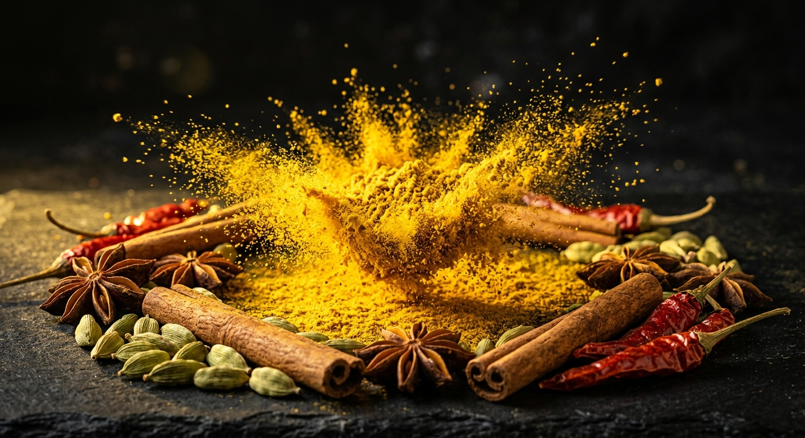
Un viaggio sensoriale tra errori storici, alchimia di sapori e benefici della curcuma.
Leggi di più →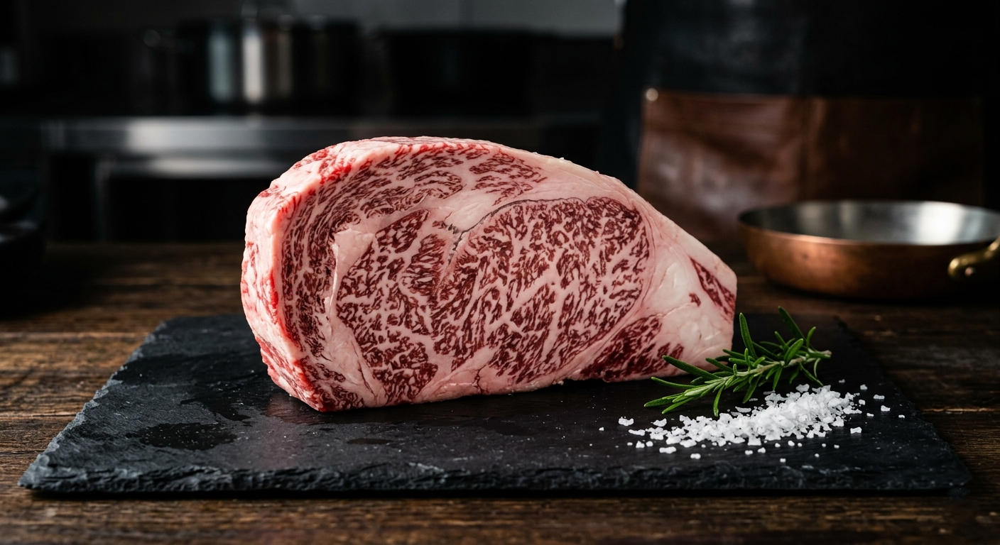
Il segreto della carne giapponese che si scioglie al primo morso.
Leggi di più →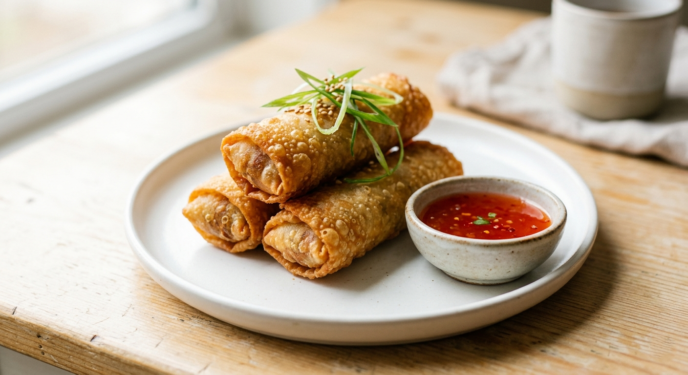
Il morso della rinascita: un viaggio tra le stagioni e i segreti del crunch perfetto.
Leggi di più →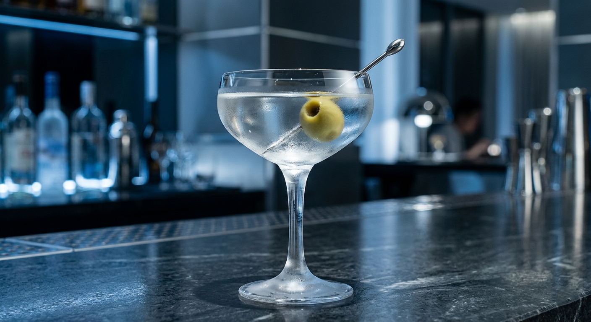
Eleganza intramontabile in una coppa: storia, tecnica e il rito della miscelazione perfetta.
Leggi di più →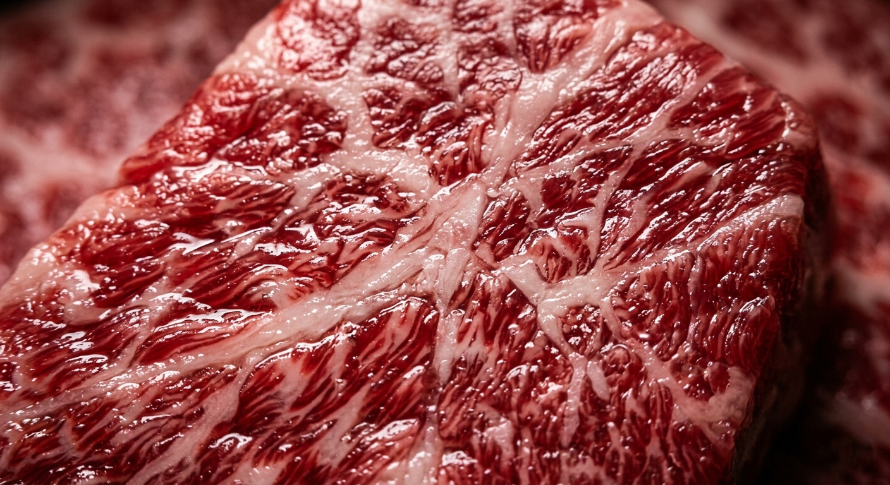
Il segreto del grasso intramuscolare che trasforma la carne in un'opera d'arte culinaria.
Leggi di più →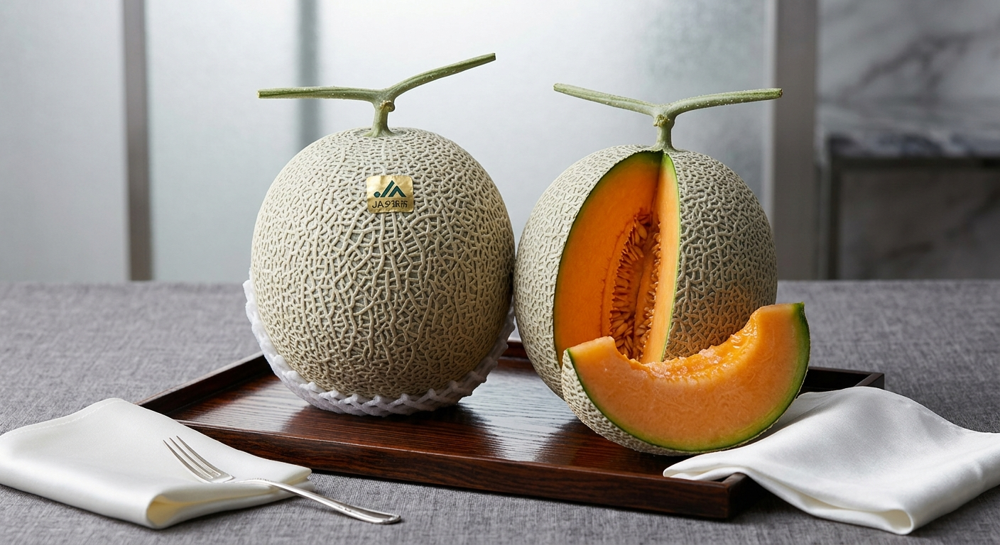
Il melone più pregiato del mondo, tra ceneri vulcaniche e massaggi a mano.
Leggi di più →
Il calore avvolgente della spezia che ha conquistato l'Europa dalle Americhe.
Leggi di più →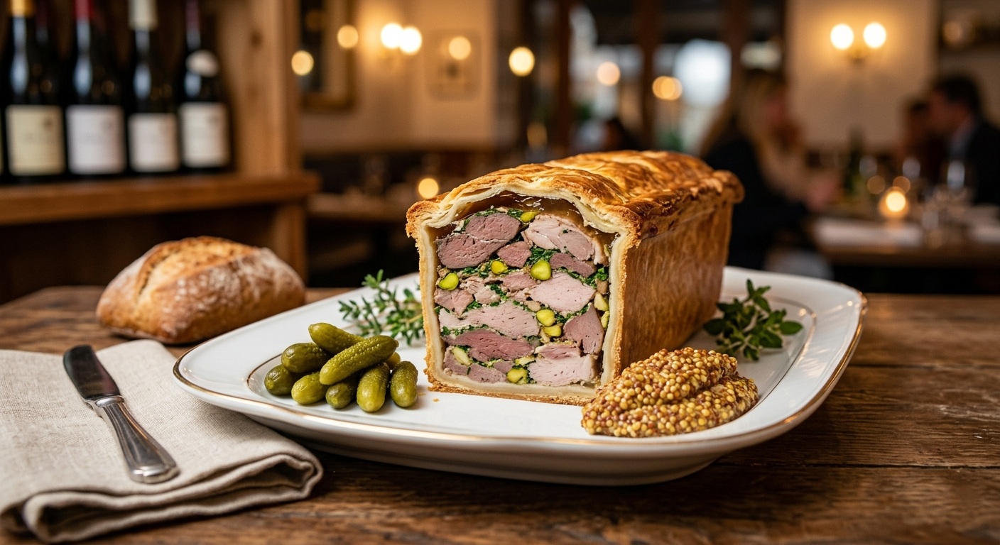
L'abbraccio lento che trasforma il semplice cibo in un'opera d'arte raffinata.
Leggi di più →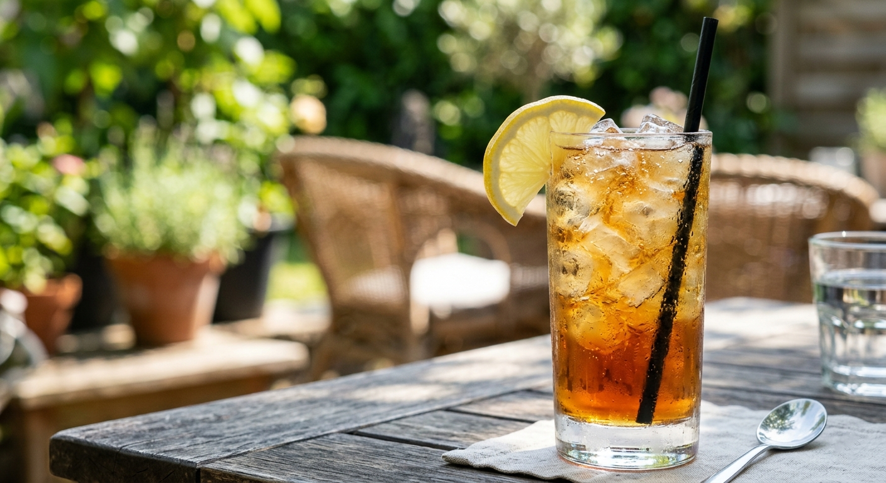
L'illusione più alcolica di sempre: tra leggende del Proibizionismo e ricette IBA.
Leggi di più →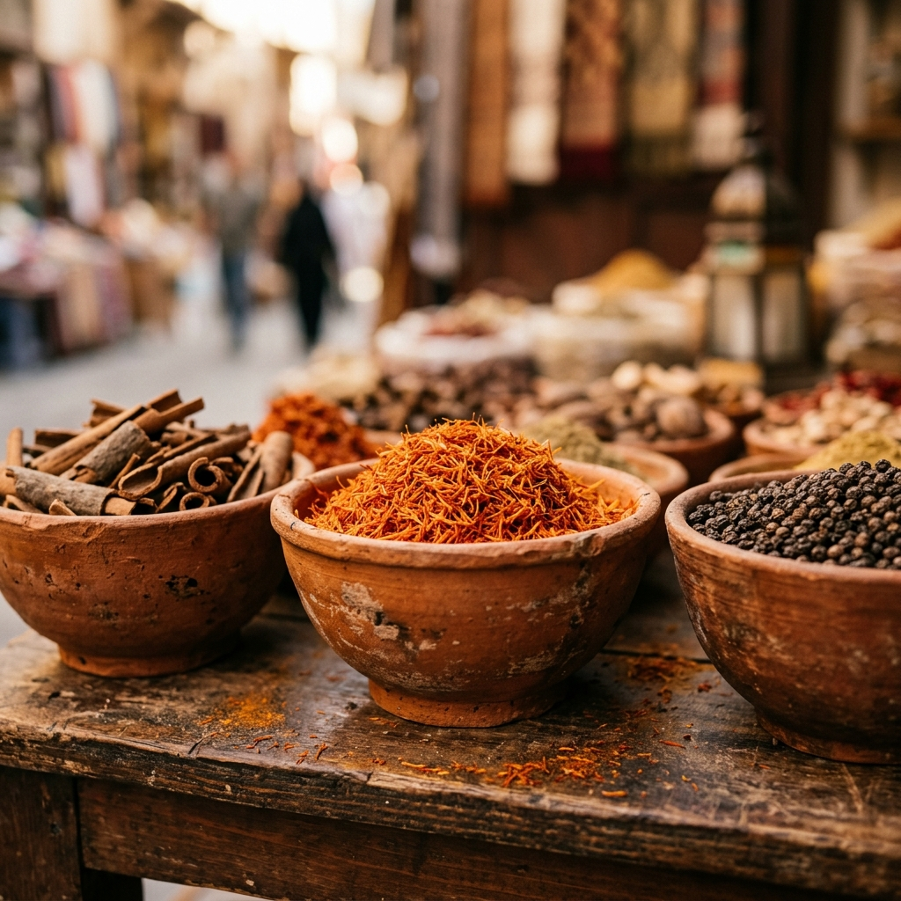
Un viaggio che ha cambiato il mondo, dalle rotte d'Oriente alle tavole reali.
Leggi di più →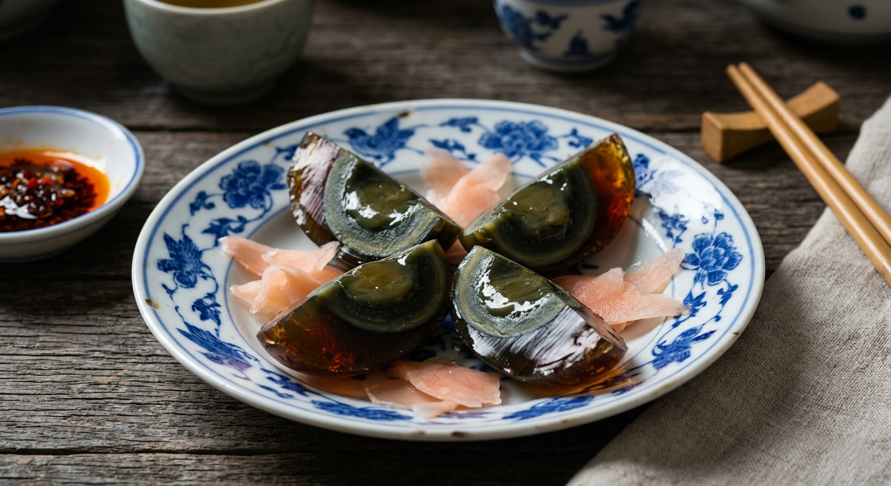
Il viaggio chimico e culturale del "gioiello nero" della gastronomia asiatica.
Leggi di più →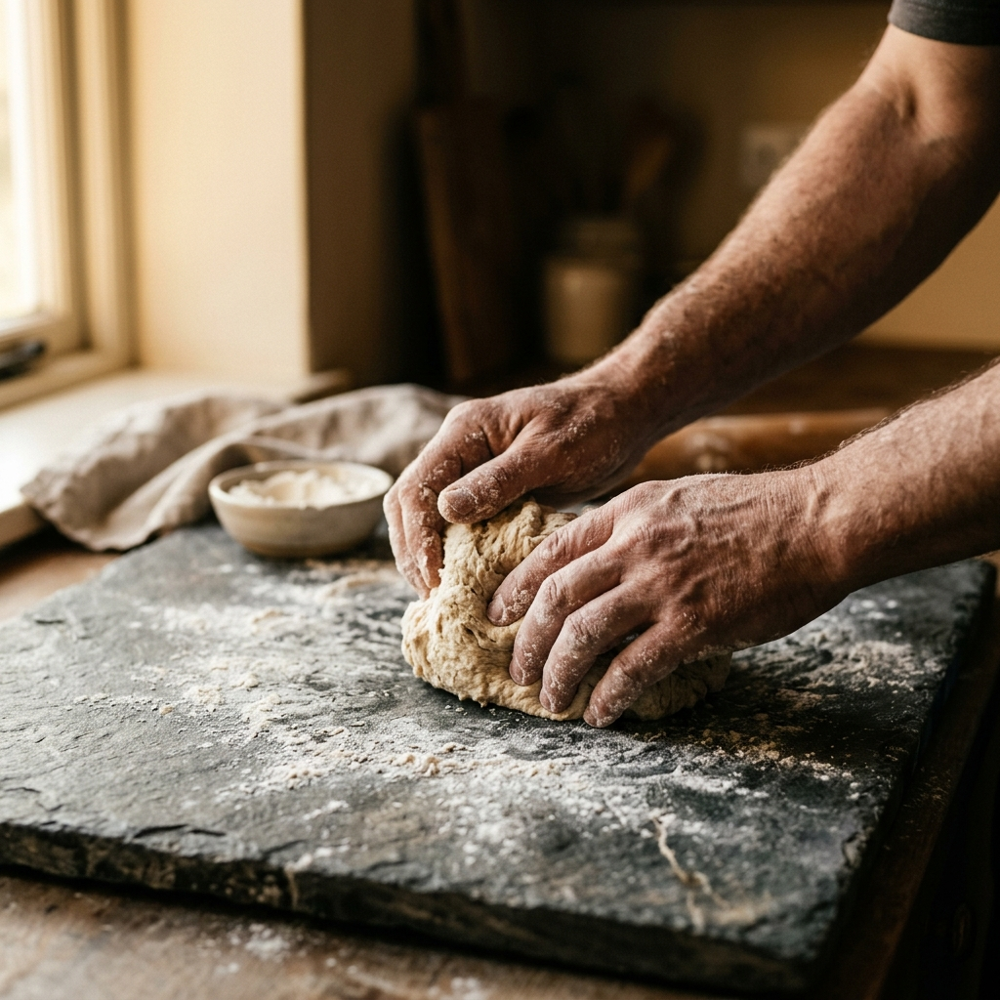
Il segreto della lievitazione naturale e il suo ritorno nelle cucine moderne.
Leggi di più →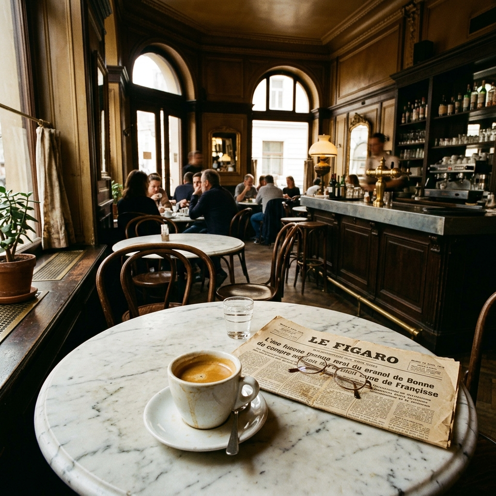
Il viaggio millenario del caffè, dalla leggenda di Kaldi all'eccellenza dell'espresso moderno.
Leggi di più →Come l'espresso ha conquistato il cuore della società e i suoi riti quotidiani.
Leggi di più →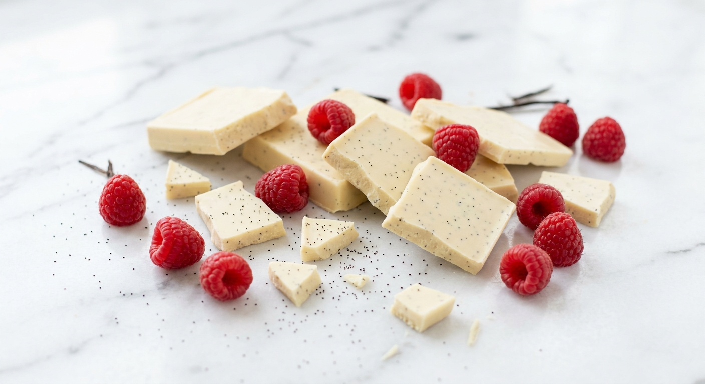
Scopriamo se il cioccolato bianco è davvero cioccolato o un geniale recupero d'archivio.
Leggi di più →
Metodi di conservazione millenari nelle profondità della terra.
Leggi di più →